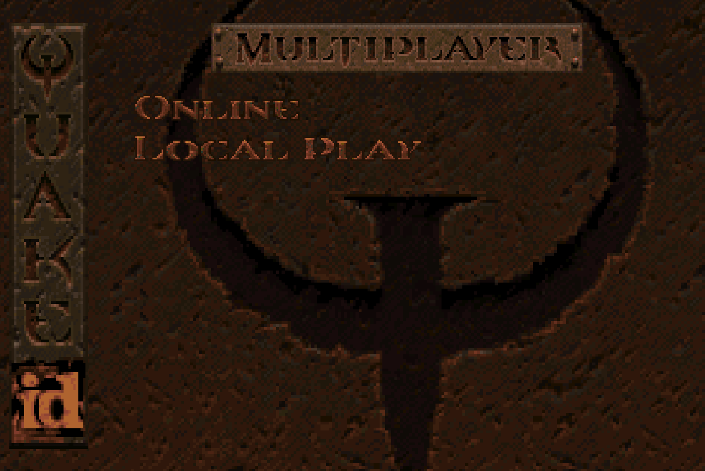
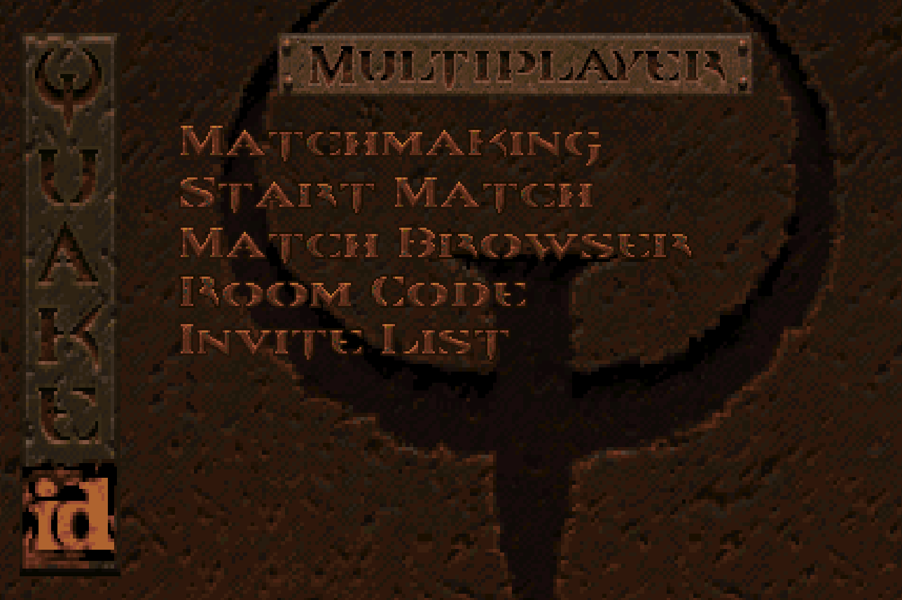
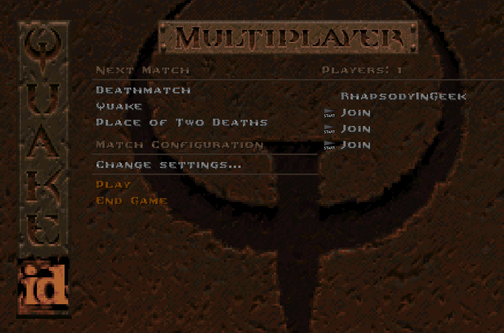
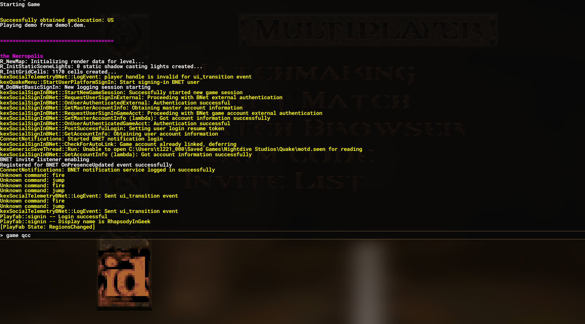
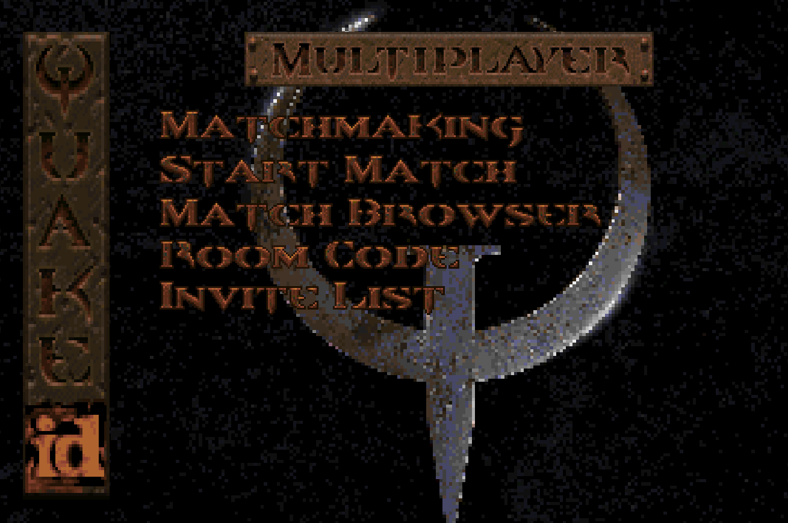
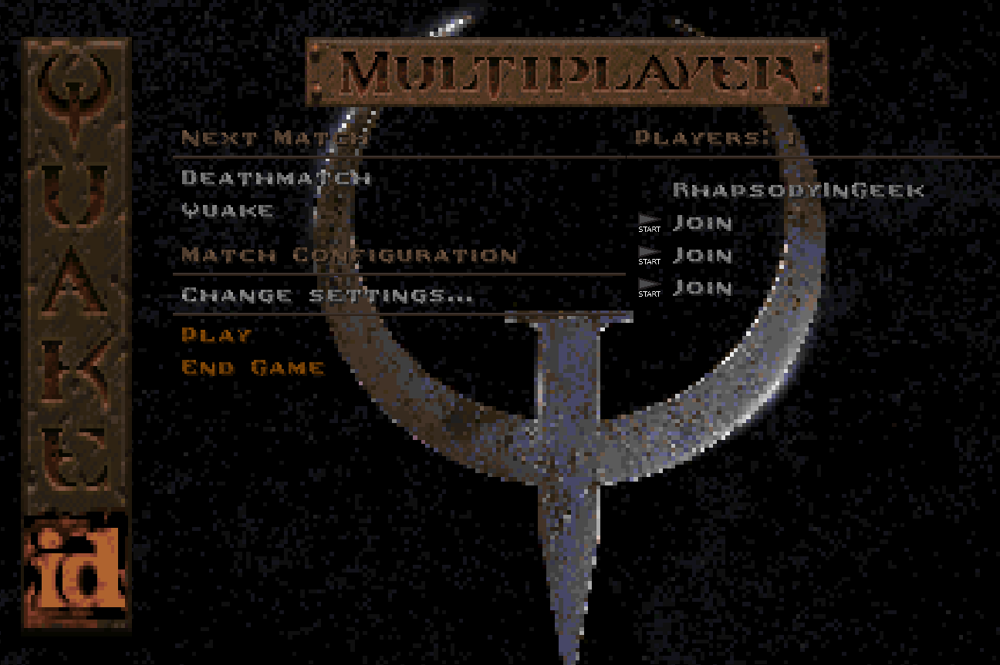
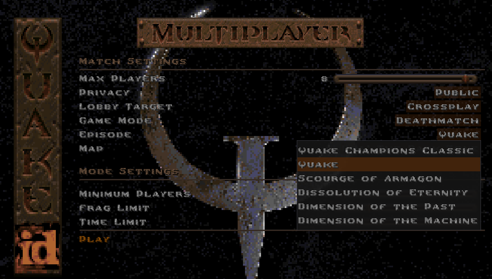

Multiplayer
Hosting A Match
To play multiplayer with the Nightdive Remaster, you'll need to follow the following steps:

Pick either Online or Local Player. Once you are in either menu...
 
... open the Console and enter the command game qcc.

If all goes well your screen should look like this:
 
You should be all set to change your server settings and start the match!
NOTE: To select a map, you'll need to choose the appropriate episode. Don't worry! This will not deactivate the mod thanks to the mapdb.json configuration.

Joining A Match
To join a server running Quake Champions Classic in the Nightdive Remaster, you need only to have the mod correctly installed. Joining any server will automatically activate the mod.
For other engines, follow their instructions. It is typically enough to activate the mod with the console command game qcc and then host / join a game as normal.
Deathmatch Modes
Currently implemented is an experimental Deathmatch Mode system. It's a bit hacky at the moment due to the way the Quake engine works. To change Deathmatch Modes you'll use impulse 4#, where # is the deathmatch mode you wish to switch to. The currently tracked modes are:
| Deathmatch Mode | Game Type | Description |
| 0 | Campaign | Used for Singleplayer, Coop, and Horde Mode. Weapons have a 1 second respawn time in Horde Mode. Automatically sets to this when running those game mode types in any engine. |
| 1 | Free For All |
Weapons have a 1 second respawn time. Normal powerup behavior. All champion skins available. Default Deathmatch mode for most engines. |
| 2 | Duel |
Weapons have a 5 second respawn time. Powerups do not spawn at start and will not respawn once picked up. All champion skins available. |
| 3 | Free For All |
Weapons have a 1 second respawn time. Normal powerup behavior. All champion skins available. Default Deathmatch mode for the Nightdive Remaster. |
| 4 | Team Deathmatch |
Weapons have a 1 second respawn time. Normal powerup behavior. Only champion team skins available. Swap teams by changing skins. Players on the same team share frags. |
| 5 | Capture the Flag |
Weapons have a 1 second respawn time. Normal powerup behavior. Only champion team skins available. Swap teams by changing skins. Players cannot score frags through killing. Frags are accumulated through capturing flags. Requires special map setup, don't set this mode manually. |